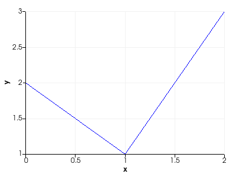

pyvista.plotting.charts.LinePlot2D#
- class LinePlot2D(x, y, color='b', width=1.0, style='-', label='')[source]#
Class representing a 2D line plot.
Users should typically not directly create new plot instances, but use the dedicated 2D chart’s plotting methods.
- Parameters:
- xarray_like
X coordinates of the points through which a line should be drawn.
- yarray_like
Y coordinates of the points through which a line should be drawn.
- color
color_like,optional Color of the line drawn in this plot. Any color parsable by
pyvista.Coloris allowed. Defaults to"b".- width
float,optional Width of the line drawn in this plot. Defaults to
1.- style
str,optional Style of the line drawn in this plot. See Pen.LINE_STYLES for a list of allowed line styles. Defaults to
"-".- label
str,optional Label of this plot, as shown in the chart’s legend. Defaults to
"".
Examples
Create a 2D chart plotting an approximate satellite trajectory.
>>> import pyvista >>> from pyvista import examples >>> import numpy as np >>> chart = pyvista.Chart2D() >>> x = np.linspace(0, 1, 100) >>> y = np.sin(6.5*x-1) >>> _ = chart.line(x, y, "y", 4) >>> chart.background_texture = examples.load_globe_texture() >>> chart.hide_axes() >>> chart.show()
- property brush#
Brush object controlling how shapes in this plot are filled.
- Returns:
BrushBrush object controlling how shapes in this plot are filled.
Examples
Use a custom texture for the 2D line plot’s brush object.
>>> import pyvista >>> from pyvista import examples >>> chart = pyvista.Chart2D() >>> plot = chart.line([0, 1, 2], [2, 1, 3]) >>> plot.brush.texture = examples.download_puppy_texture() >>> chart.show()

- property color#
Return or set the plot’s color.
This is the color used by the plot’s pen and brush to draw lines and shapes.
Examples
Set the 2D line plot’s color to red.
>>> import pyvista >>> chart = pyvista.Chart2D() >>> plot = chart.line([0, 1, 2], [2, 1, 3]) >>> plot.color = 'r' >>> chart.show()
- property label#
Return or set the this plot’s label, as shown in the chart’s legend.
Examples
Create a 2D line plot with custom label.
>>> import pyvista >>> chart = pyvista.Chart2D() >>> plot = chart.line([0, 1, 2], [2, 1, 3]) >>> plot.label = "My awesome plot" >>> chart.show()
- property line_style#
Return or set the line style of all lines drawn in this plot.
This is equivalent to accessing/modifying the style of this plot’s pen.
Examples
Set a custom line style.
>>> import pyvista >>> chart = pyvista.Chart2D() >>> plot = chart.line([0, 1, 2], [2, 1, 3]) >>> plot.line_style = '-.' >>> chart.show()
- property line_width#
Return or set the line width of all lines drawn in this plot.
This is equivalent to accessing/modifying the width of this plot’s pen.
Examples
Set the line width to 10
>>> import pyvista >>> chart = pyvista.Chart2D() >>> plot = chart.line([0, 1, 2], [2, 1, 3]) >>> plot.line_style = '-' # Make sure all lines are visible >>> plot.line_width = 10 >>> chart.show()
- property pen#
Pen object controlling how lines in this plot are drawn.
- Returns:
PenPen object controlling how lines in this plot are drawn.
Examples
Increase the line width of the 2D line plot’s pen object.
>>> import pyvista >>> chart = pyvista.Chart2D() >>> plot = chart.line([0, 1, 2], [2, 1, 3]) >>> plot.line_style = '-' # Make sure all lines are visible >>> plot.pen.width = 10 >>> chart.show()

- toggle()#
Toggle the plot’s visibility.
Examples
Create a 2D line plot.
>>> import pyvista >>> chart = pyvista.Chart2D() >>> plot = chart.line([0, 1, 2], [2, 1, 3]) >>> chart.show()

Hide it.
>>> plot.toggle() >>> chart.show()

- update(x, y)[source]#
Update this plot’s points, through which a line is drawn.
- Parameters:
- xarray_like
The new x coordinates of the points through which a line should be drawn.
- yarray_like
The new y coordinates of the points through which a line should be drawn.
Examples
Create a line plot.
>>> import pyvista >>> chart = pyvista.Chart2D() >>> plot = chart.line([0, 1, 2], [2, 1, 3]) >>> chart.show()

Update the line’s y coordinates.
>>> plot.update([0, 1, 2], [3, 1, 2]) >>> chart.show()
- property visible#
Return or set the this plot’s visibility.
Examples
Create a 2D line plot.
>>> import pyvista >>> chart = pyvista.Chart2D() >>> plot = chart.line([0, 1, 2], [2, 1, 3]) >>> chart.show()

Hide it.
>>> plot.visible = False >>> chart.show()

- property x#
Retrieve the X coordinates of the points through which a line is drawn.
Examples
Create a line plot and display the x coordinates.
>>> import pyvista >>> chart = pyvista.Chart2D() >>> plot = chart.line([0, 1, 2], [2, 1, 3]) >>> plot.x pyvista_ndarray([0, 1, 2]) >>> chart.show()

- property y#
Retrieve the Y coordinates of the points through which a line is drawn.
Examples
Create a line plot and display the y coordinates.
>>> import pyvista >>> chart = pyvista.Chart2D() >>> plot = chart.line([0, 1, 2], [2, 1, 3]) >>> plot.y pyvista_ndarray([2, 1, 3]) >>> chart.show()
